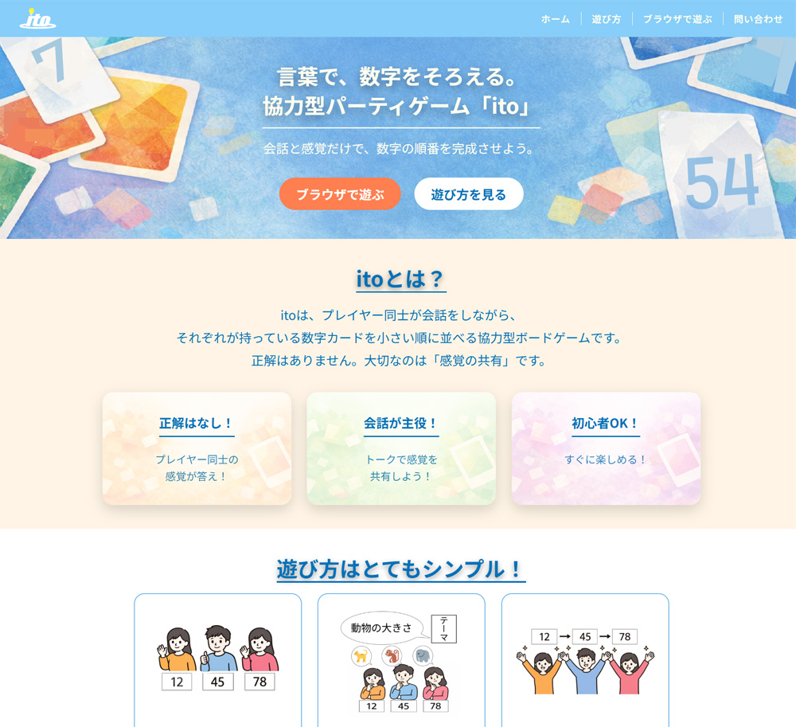

ボードゲーム「ito」をモチーフとした架空のLP。訓練校でサイト制作実習の2作品目として制作。
PC対応(スマホ非対応)のサイトとして、「ホーム」「遊び方」「問い合わせ」ページを作成し、
「ブラウザで遊ぶ」ページについては実際にブラウザ上で遊べるアプリケーションを開発。
URL
担当
デザイン・コーディング
サイトの目的
サービスの認知と新規ユーザの獲得
ターゲット
友達とオンラインで遊びたい人・会話を楽しむゲームが好きな人・ボードゲーム初心者・アイスブレイクを探している人
デザインについて
サイトは1ページで完結するシンプルな縦スクロール型の構成。
ヘッダー・ヒーロー・各セクション・フッターと、情報が整理された順序で並んでおり、ユーザーが迷わず読み進められる導線設計を意識。
CTAボタンの設計としてヒーローセクションに「ブラウザで遊ぶ」「遊び方を見る」の2つのボタンを配置し、ユーザーの行動を明確に促す構成にしている。
ファーストビューで次のアクションに誘導する典型的なLP（ランディングページ）的なアプローチとしている。
構成について
HTML・CSSにて画面を構成。画像はフリー素材サイトから取得し、サイズ変更などの加工を実施。
ロゴはIllustratorで作成。